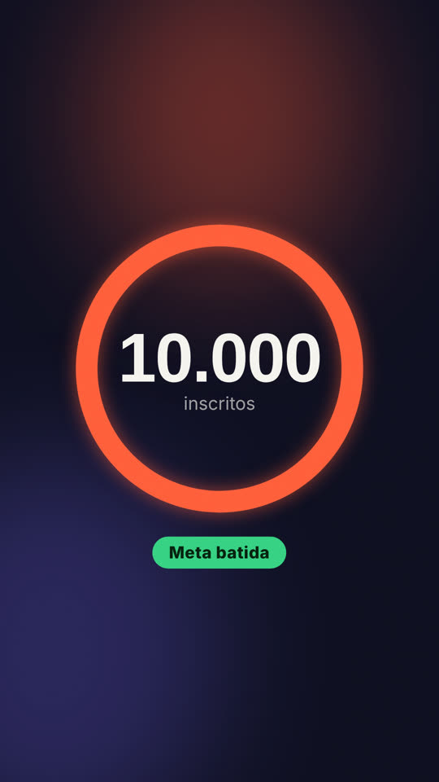
Contador de inscritos
um anel que se fecha enquanto o número sobe até a meta, terminando em selo de meta batida
criador · 3.8 s ·contador-inscritos
um anel que se fecha enquanto o número sobe até a meta, terminando em selo de meta batida
criador · 3.8 s ·contador-inscritosa frase entra palavra por palavra e a palavra que importa ganha a cor de destaque e um pequeno impulso
criador · 3.2 s ·legenda-cinetica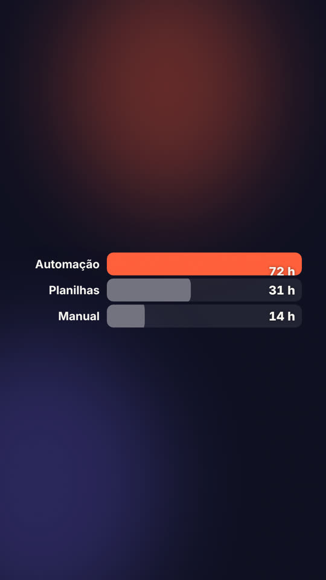
barras horizontais que crescem juntas, se reordenam pelo valor e deixam o destaque da marca no topo
dados · 4.8 s ·corrida-de-barras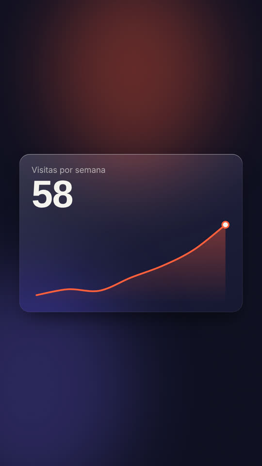
uma linha que se desenha ponto a ponto sob um número que acompanha o último ponto
dados · 4.6 s ·grafico-de-linha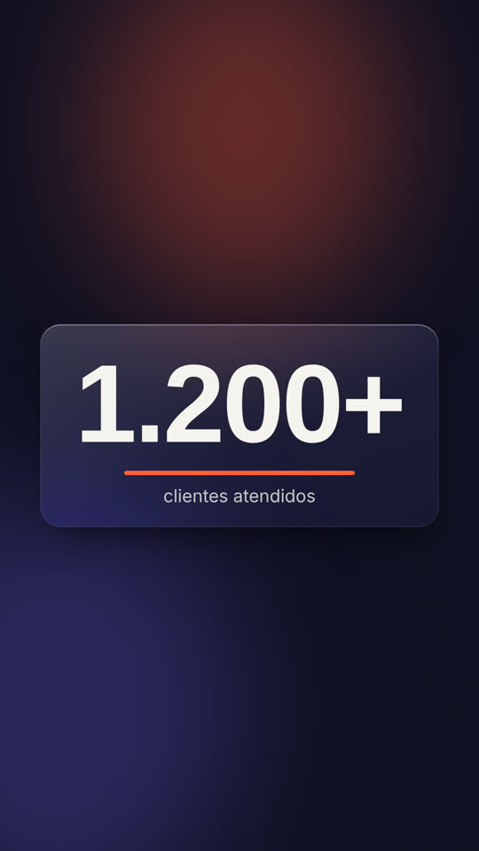
um painel de vidro com um número enorme que só aparece quando começa a contar, para no valor e recebe um brilho que passa uma vez
dados · 3.4 s ·numero-grande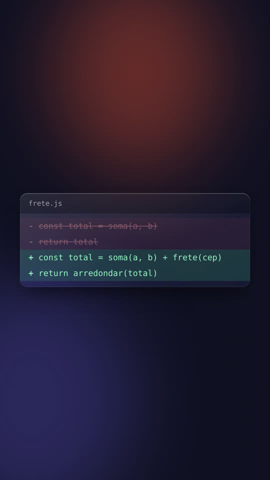
um arquivo em que as linhas antigas ficam riscadas em vermelho e as novas entram em verde
dev · 4.2 s ·diff-de-codigo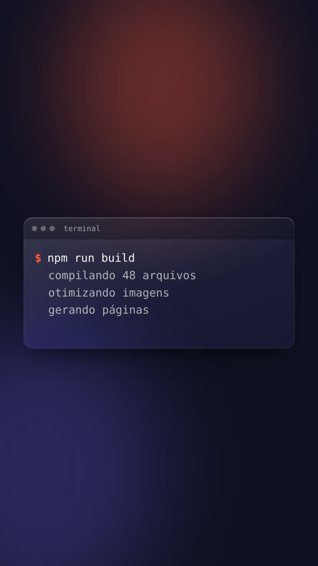
uma janela de terminal em que o comando é digitado, a saída aparece linha a linha e a última confirma o resultado
dev · 4.4 s ·terminal-comandodois painéis em que um divisor corre da esquerda para a direita e troca o antes apagado pelo depois em destaque
explicar · 4.4 s ·antes-e-depois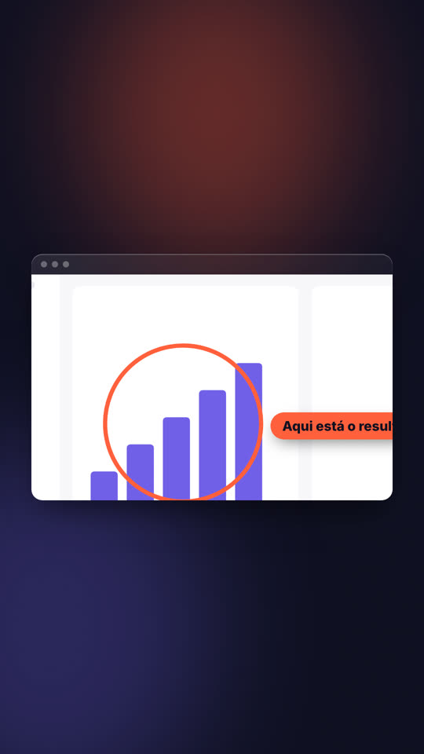
a tela real do produto numa janela: um anel se desenha sobre o ponto importante, a janela aproxima e um rótulo aponta
explicar · 4.8 s ·destaque-na-telacada ponto da lista ocupa o quadro inteiro por vez, com o número gigante e o título, em cortes rápidos
explicar · 5.2 s ·lista-numeradauma lista de passos em que cada um gira, conclui e dá lugar ao próximo, com a barra de progresso embaixo
ia · 4.6 s ·execucao-de-agenteuma caixa de pedido que recebe o texto digitado, é enviada com um toque no botão e abre a resposta palavra por palavra
ia · 5.6 s ·prompt-e-resposta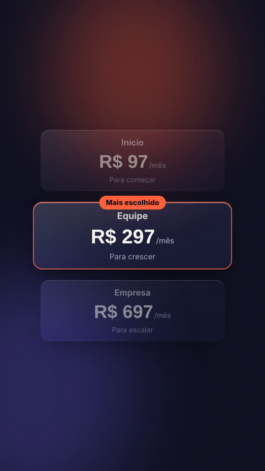
três planos lado a lado em que o do meio sobe, ganha o selo de mais escolhido e os outros recuam
negocios · 4.4 s ·cartao-de-planoum cartão de cliente que atravessa as três etapas do funil e termina carimbado como fechado, com o valor contado
negocios · 4.8 s ·negocio-fechado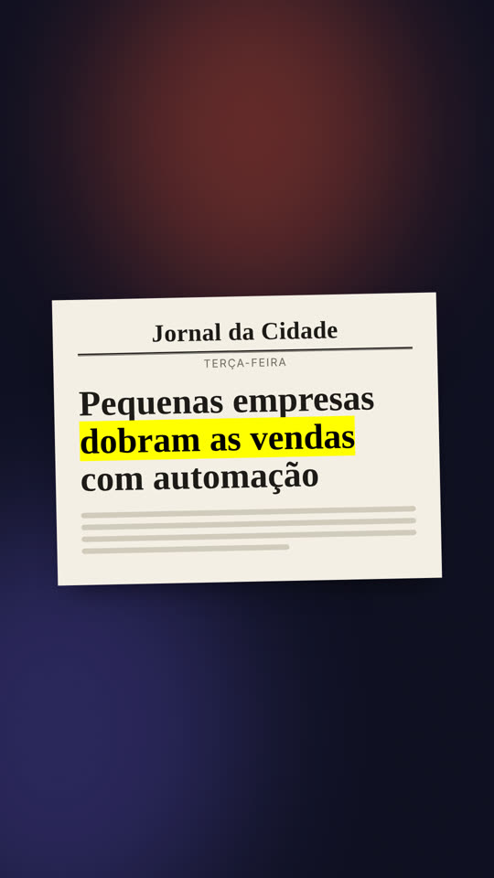
um recorte de jornal cuja manchete é escrita e tem um trecho marcado com marca-texto
papel · 4 s ·manchete-de-jornal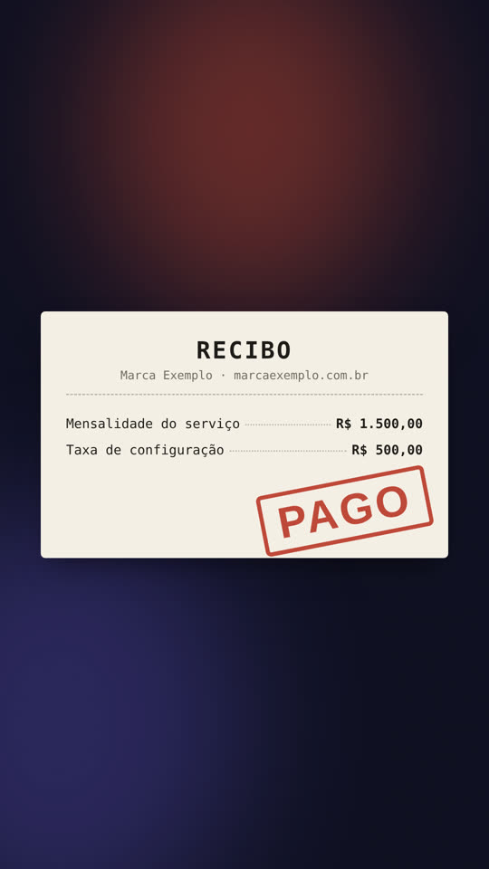
um recibo de papel que recebe as linhas uma a uma e leva um carimbo de pago
papel · 4.2 s ·recibo-carimbado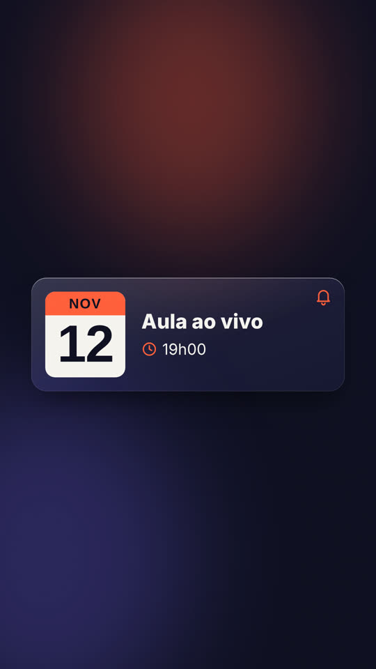
um cartão de calendário com o dia em destaque, o título e o horário, que termina com um sininho avisando
produtividade · 3.6 s ·evento-de-agenda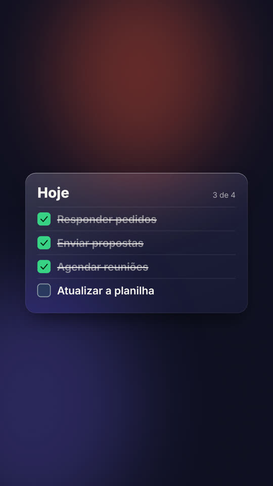
um cartão de tarefas em que cada item é marcado e riscado em sequência, com o contador de concluídas
produtividade · 4.4 s ·lista-de-tarefasuma janela de confirmação em que o cursor atravessa a tela, clica no botão principal e a caixa vira um aviso de feito
sistema · 4.4 s ·caixa-de-dialogonotificações de celular que descem uma a uma, empurrando as anteriores para baixo
sistema · 4.2 s ·pilha-de-notificacoesuma pílula com a palavra-chave e uma fila de comentários que a repetem, entrando em sequência
social · 3.6 s ·comentario-palavra-chaveum cartão de publicação cujo coração estoura e o contador de curtidas sobe uma
social · 3.6 s ·post-curtido